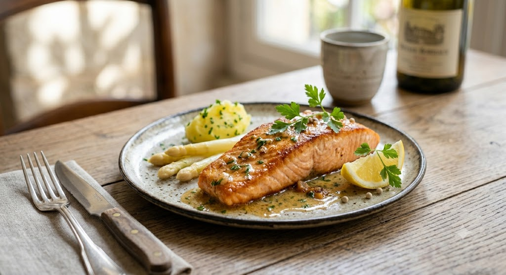
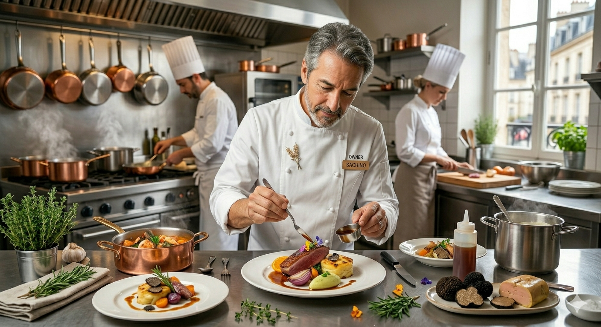
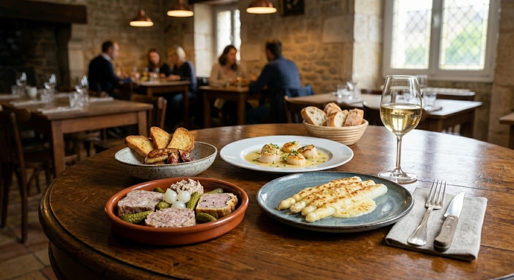
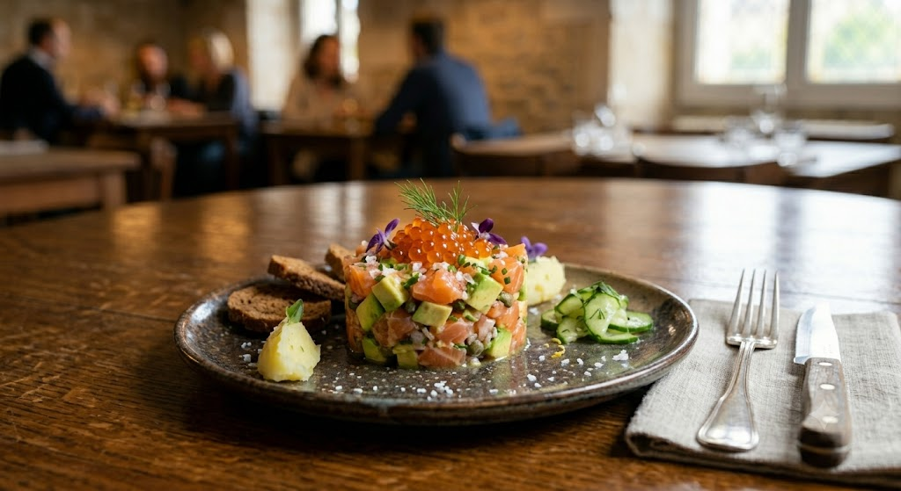

Gare de Lyon
夜のフルコース 3,500 円（税別）
創業十八年、変わらぬ情熱と価格で。

Signiture Dish
サーモンのムニエル
フレンチの要、魚料理。当店が誇る「サーモンのムニエル」は、表面はパリッと香ばしく、中はしっとりとレアの食感を残す絶妙な火入れ。熟練のシェフがソースの一滴までこだわり抜いた、他では味わえない一皿です。

篠原 博昭
Owner Chef
2008年、仙台・一番町のビル2階に小さな店をつくりました。その名は「ガレ ド リヨン」。お客様が日常の喧騒を離れ、一皿の料理を通じて幸せな時間へと旅立つことができる場所でありたいという想いを込めています。
十八年、変わらぬ情熱で厨房に立ち続けてきました。フレンチという言葉に構える必要はありません。私が目指すのは、一皿一皿に真心を込め、納得のボリュームと品質を、誰もが楽しめる価格で提供すること。それが職人としての、私の誓りです。
Case 01
特別な日を
祝いたいけれど
「高い店は緊張する…」そんな方にこそ。窮屈張らない温かい空間で、本格コースをお楽しみください。
Case 02
美味しいものを
お腹いっぱい
「フレンチは量が少ない」という常識を覆すボリューム。肉と魚の両方を楽しめるフルコースが定番です。
Case 03
仲間内での
小さな集まりに
8〜14名様での貸切も可能です。ビルの2階、隠れ家ならではの一体感あるパーティーを演出します。
「前菜だけでコースが食べたい」とまで言われるシェフ渾身の一皿。
当ページよりご予約いただいたお客様に、
その日の厳選素材を使った「スペシャリテ」を無料進呈。


「仙台でお薦めのフレンチレストランはどこ？と聞いたら〚ガレ ド リヨンのパテドカンパーニュは絶品だよ〛と教えて貰ったのがキッカケ. 前菜が本当に大好き. お肉もお魚もソースが美味しくて、いつもパンでソースまで残さず食べてしまいます。」
－ リピーター様より
「このご時世にフルコースを3,500円で食べれるなんて. 素敵なシェフが手書きの達筆なメニューを見せてくれ、ボリュームもあり、とても心地よい空間でした。」
－ 初来店のお客様より
店舗情報
ガレ ド リヨン (GARE de Lyon)
〒980-0811
宮城県仙台市青葉区一番町１丁目１１−１０
タカハシビル 2F
営業時間：
Lunch 11:30～13:30 / Dinner 17:30～21:30
定休日：不定休
アクセス
地下鉄「青葉通一番町駅」南1出口より徒歩約6分。
JR各線「仙台駅」西口より徒歩約15分。
ビル2Fの一番奥にございます。扉を開ければ、そこが「リヨン駅」です。